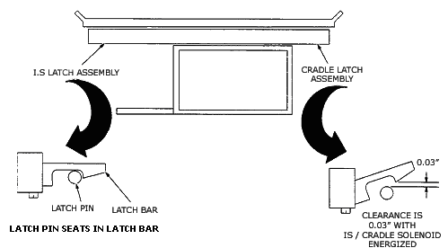

| NOTE: | While performing this procedure, do not accidentally pull the I.S. and cradle towards you before pushing on it. This can defeat the purpose of the procedure. The home switch should already be activated, but if it is not, pulling the table slightly towards you may be enough to trip it. This indicates the switch needs adjustment (See Illustration 1). |
Illustration 1: I.S. and Cradle Latch Assemblies
